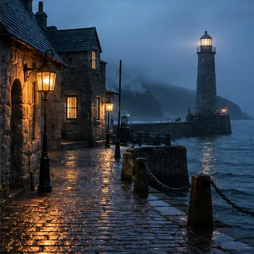

the town the map forgot
They say Grimhaven appears on no map twice. Sailors mark it in pencil and the pencil rubs out by morning. The tide brings things in that were never lost, and the lighthouse keeper - there has not been one for forty years - still lights the lamp at dusk. If you find the town, the town has already found you. Mind the third lamp post. Do not answer to your name after midnight. And if the baker offers you yesterday's bread, take it. It is always yesterday's.
Images are AI-generated with ChatGPT image generation, not documentary photographs. Motion uses the original local CSS/JavaScript/canvas animation; no Gemini Veo video was used.